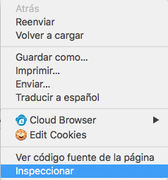
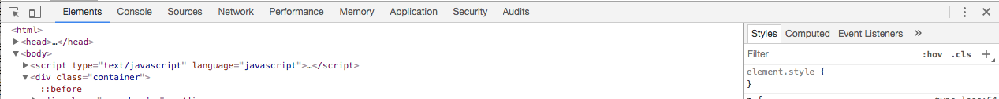

Bienvenido!!
Pulsa botón secundario sobre la web y selecciona inspeccionar.

Tras desplegar el menú de desarrollador del navegador, pulsa sobre la opción "Console".

Para lanzar una petición REST a uno de los servicios existentes en la aplicación SpringBoot pulsa el siguiente botón:
Se puede ver en la consola del navegador que aparece el error mencionado: "Failed to load http://localhost:8080/hello: No 'Access-Control-Allow-Origin' header is present on the requested resource. Origin 'null' is therefore not allowed access."
Se puede realizar una segunda petición al servicio que tiene habilitado el acceso: